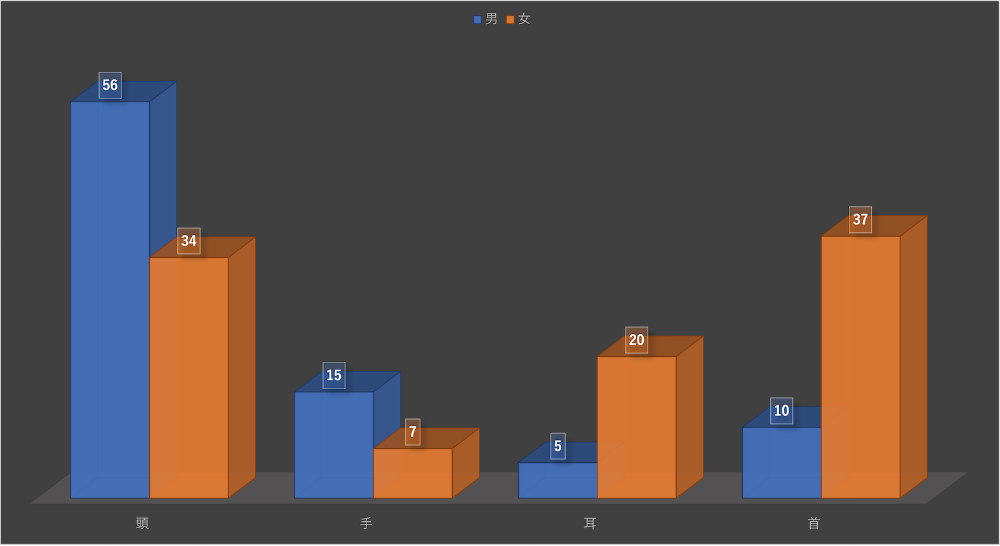

第4回
観察内容
アクセサリーの調査
内容
手首、耳元、指、首元などに分け、身に付けている人数やアクセサリーの種類などを調査
場所
みなとみらキャンパスで入口
MARK IS みなとみらい前の広場 など
観察結果

- 部分によって男女で数の逆転が現れた
→仕事や生活スタイルに関わっている
- アクセサリーと聞くと女性のイメージが強いが、男性もほとんど変わらないだけの人数が着用していた
振り返り
今回の観察はうまくいかなかった点がいくつかあった。
まず、季節柄、調査対象が確認しずらかった。そのため、正しい調査結果にはなっていないように感じた。
そして、班員一人一人の調査のやり方に誤差があった。種類まで調査していたり、年齢まで調査しているなど、班員で調査するポイント一人一人がずれていた。
また、調査内容を変更しようと試みたが、臨機応変に対応することができなかった。そのため、本来の調査も変更しようとした内容も中途半端なものになってしまった。
次回以降の調査では今回の反省を生かし、調査方法の細かいところまで班員と話し合い、その場に合わせた臨機応変な対応ができるようにする。